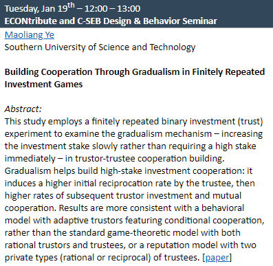

应欧洲科学院院士、德国科隆大学Axel Ockenfels教授邀请，叶茂亮副教授于1月19日在ECONtribute and C-SEB Design & Behavior Seminar上做了线上讲座，题目为“Building Cooperation Through Gradualism in Finitely Repeated Investment Games”。叶老师详细介绍了关于甲方-乙方（或投资方-被投资方，信任方-被信任方，委托人-代理人）投资关系中的合作问题的重要性、难度及相关机制，并阐述了对循序渐进机制猜想的实验验证与理论探究。Axel Ockenfels教授是该话题的专家，有多篇相关高质量论文发表。他和其他研究人员对论文表示了浓厚兴趣和高度肯定，对实验结果、理论解释等研究细节与叶老师展开了充分的讨论，并对进一步分析提出若干建设性意见。

ECONtribute and C-SEB Design & Behavior Seminar是科隆大学和德国行为研究的重要研讨会。关于ECONtribute 和C-SEB的相关介绍：
ECONtribute: Markets & Public Policy, a joint initiative of the Universities of Bonn and Cologne, is funded as a Cluster of Excellence in the German Excellence Strategy. The goal of the Cluster is to advance a new paradigm for the analysis of markets & public policy in light of fundamental societal and technological challenges. The Cluster consists of more than 40 researchers, organized in nine Research Areas. The ECONtribute Network promotes two-way knowledge exchange between researchers and policymakers. All research activities are organized under the roof of the Reinhard Selten Institute (RSI).
(https://selten.institute/econtribute/)
The Excellence Center for Social and Economic Behavior (C-SEB) is only as excellent as its members: Around 25 principal investigators, 15 junior and assistant professors, 20 postdocs, and 60 doctoral students constitute the center, as well as more than 60 affiliate members.
The Center for Social and Economic Behavior (C-SEB) was established in 2015 as a result of the University of Cologne’s (UoC’s) successful application to the Excellence Initiative of the German government. In its institutional strategy “Meeting the Challenge of Change and Complexity”, the UoC defines five Key Profile Areas (KPAs) that address topics of high scientific, technological and societal relevance. These four KPAs belong to strong international and national networks and are partners in cooperation projects with many regional non-university research institutes as well as industrial partners.
C-SEB institutionalizes the KPA II “Behavioral Economic Engineering and Social Cognition” that brings together researchers from economics, management science, psychology and related fields to investigate social and economic behavior. The center is also embedded in the UoC Competence Area II “Social and Economic Behavior” (CA II) which is associated with KPA II and houses various research endeavors on social and economic behavior.
(http://c-seb.de/en/center/)